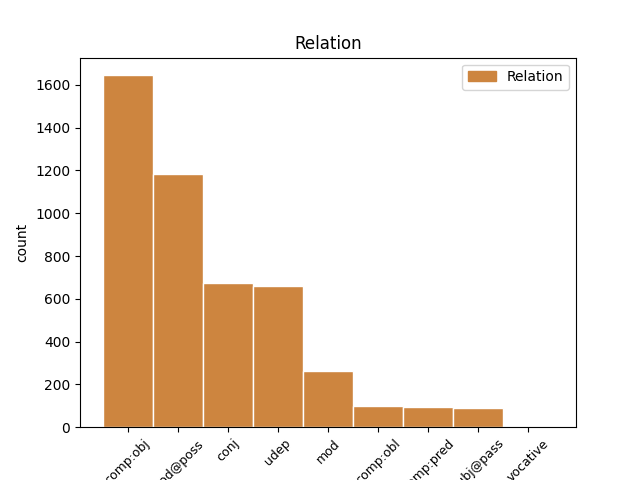
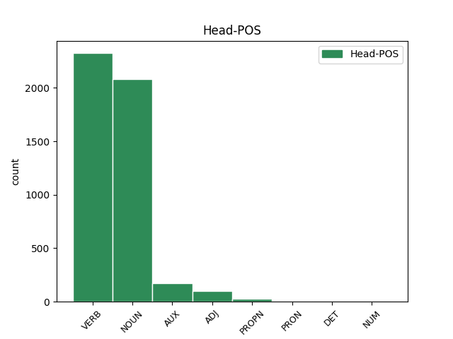
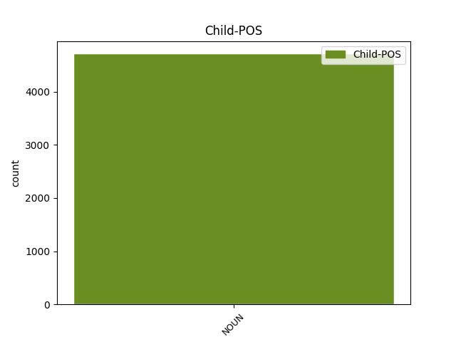

Distribution of features within this leaf



Agreement Rules sorted by frequency.
- When the dependent token is the direct object complements(comp:obj) of the head token, and the dependent token is NOUN.
1 Żelazny _ _ _ _ 0 _ _ _
2 kolos _ _ _ _ 0 _ _ _
3 Żugajowi _ _ _ _ 0 _ _ _
4 nie _ _ _ _ 0 _ _ _
5 nabił nabić VERB praet:sg:m2:perf Aspect=Perf|Gender=Masc|Mood=Ind|Number=Sing|SubGender=Masc2|Tense=Past|VerbForm=Fin|Voice=Act 0 _ _ _
6 nawet _ _ _ _ 0 _ _ _
7 guza guz NOUN subst:sg:gen:m2 Case=Gen|Gender=Masc|Number=Sing|SubGender=Masc2 5 comp:obj _ SpaceAfter=No
8 . _ _ _ _ 0 _ _ _
1 Żołnierze żołnierz NOUN subst:pl:nom:m1 Case=Nom|Gender=Masc|Number=Plur|SubGender=Masc1 0 _ _ _
2 poznańskiego _ _ _ _ 0 _ _ _
3 garnizonu garnizon NOUN subst:sg:gen:m3 Case=Gen|Gender=Masc|Number=Sing|SubGender=Masc3 1 mod@poss _ _
4 pełnili _ _ _ _ 0 _ _ _
5 honorową _ _ _ _ 0 _ _ _
6 straż _ _ _ _ 0 _ _ _
7 . _ _ _ _ 0 _ _ _
1 Żaden _ _ _ _ 0 _ _ _
2 z _ _ _ _ 0 _ _ _
3 generałów _ _ _ _ 0 _ _ _
4 nie _ _ _ _ 0 _ _ _
5 podał _ _ _ _ 0 _ _ _
6 nazwy nazwa NOUN subst:sg:gen:f Case=Gen|Gender=Fem|Number=Sing 0 _ _ _
7 pocisku _ _ _ _ 0 _ _ _
8 , _ _ _ _ 0 _ _ _
9 ani _ _ _ _ 0 _ _ _
10 jego _ _ _ _ 0 _ _ _
11 charakterystyki charakterystyka NOUN subst:sg:gen:f Case=Gen|Gender=Fem|Number=Sing 6 conj _ SpaceAfter=No
12 . _ _ _ _ 0 _ _ _
1 Żołnierze _ _ _ _ 0 _ _ _
2 okopali _ _ _ _ 0 _ _ _
3 się _ _ _ _ 0 _ _ _
4 tam _ _ _ _ 0 _ _ _
5 i _ _ _ _ 0 _ _ _
6 celnymi _ _ _ _ 0 _ _ _
7 strzałami strzał NOUN subst:pl:inst:m3 Case=Ins|Gender=Masc|Number=Plur|SubGender=Masc3 8 udep _ _
8 odpierali odpierać VERB praet:pl:m1:imperf Aspect=Imp|Gender=Masc|Mood=Ind|Number=Plur|SubGender=Masc1|Tense=Past|VerbForm=Fin|Voice=Act 0 _ _ _
9 atakujących _ _ _ _ 0 _ _ _
10 . _ _ _ _ 0 _ _ _
1 Środek środek NOUN subst:sg:nom:m3 Case=Nom|Gender=Masc|Number=Sing|SubGender=Masc3 2 subj@pass _ _
2 był być AUX praet:sg:m3:imperf Aspect=Imp|Gender=Masc|Mood=Ind|Number=Sing|SubGender=Masc3|Tense=Past|VerbForm=Fin|Voice=Act 0 _ _ _
3 ocenzurowany _ _ _ _ 0 _ _ _
4 . _ _ _ _ 0 _ _ _
1 Ów _ _ _ _ 0 _ _ _
2 pan _ _ _ _ 0 _ _ _
3 był być AUX praet:sg:m1:imperf Aspect=Imp|Gender=Masc|Mood=Ind|Number=Sing|SubGender=Masc1|Tense=Past|VerbForm=Fin|Voice=Act 0 _ _ _
4 dziedzicem dziedzic NOUN subst:sg:inst:m1 Case=Ins|Gender=Masc|Number=Sing|SubGender=Masc1 3 comp:pred _ SpaceAfter=No
5 . _ _ _ _ 0 _ _ _
1 Zbieranie zbierać NOUN ger:sg:nom:n:imperf:aff Aspect=Imp|Case=Nom|Gender=Neut|Number=Sing|Polarity=Pos|VerbForm=Vnoun 0 _ _ _
2 dzieł dzieło NOUN subst:pl:gen:n Case=Gen|Gender=Neut|Number=Plur 1 mod _ _
3 twórców _ _ _ _ 0 _ _ _
4 nieprofesjonalnych _ _ _ _ 0 _ _ _
5 zapewnia _ _ _ _ 0 _ _ _
6 światowy _ _ _ _ 0 _ _ _
7 prestiż _ _ _ _ 0 _ _ _
8 i _ _ _ _ 0 _ _ _
9 międzynarodowe _ _ _ _ 0 _ _ _
10 przyjaźnie _ _ _ _ 0 _ _ _
11 . _ _ _ _ 0 _ _ _
1 Zaczęło _ _ _ _ 0 _ _ _
2 się _ _ _ _ 0 _ _ _
3 od _ _ _ _ 0 _ _ _
4 tego _ _ _ _ 0 _ _ _
5 , _ _ _ _ 0 _ _ _
6 że _ _ _ _ 0 _ _ _
7 kupili kupić VERB praet:pl:m1:perf Aspect=Perf|Gender=Masc|Mood=Ind|Number=Plur|SubGender=Masc1|Tense=Past|VerbForm=Fin|Voice=Act 0 _ _ _
8 śmy _ _ _ _ 0 _ _ _
9 koledze kolega NOUN subst:sg:dat:m1 Case=Dat|Gender=Masc|Number=Sing|SubGender=Masc1 7 comp:obl _ _
10 na _ _ _ _ 0 _ _ _
11 urodziny _ _ _ _ 0 _ _ _
12 tarczę _ _ _ _ 0 _ _ _
13 i _ _ _ _ 0 _ _ _
14 sami _ _ _ _ 0 _ _ _
15 zaczęli _ _ _ _ 0 _ _ _
16 śmy _ _ _ _ 0 _ _ _
17 grać _ _ _ _ 0 _ _ _
18 . _ _ _ _ 0 _ _ _
1 - _ _ _ _ 0 _ _ _
2 Wsadzili wsadzić VERB praet:pl:m1:perf Aspect=Perf|Gender=Masc|Mood=Ind|Number=Plur|SubGender=Masc1|Tense=Past|VerbForm=Fin|Voice=Act 0 _ _ _
3 mnie _ _ _ _ 0 _ _ _
4 na _ _ _ _ 0 _ _ _
5 takiego _ _ _ _ 0 _ _ _
6 trupa _ _ _ _ 0 _ _ _
7 , _ _ _ _ 0 _ _ _
8 bracie brat NOUN subst:sg:voc:m1 Case=Voc|Gender=Masc|Number=Sing|SubGender=Masc1 2 vocative _ SpaceAfter=No
9 . _ _ _ _ 0 _ _ _
Disagree Examples:
1 102 _ _ _ _ 0 _ _ _
2 lata rok NOUN subst:pl:acc:m3 Case=Acc|Gender=Masc|Number=Plur|SubGender=Masc3 3 comp:obj _ _
3 obchodziła obchodzić VERB praet:sg:f:imperf Aspect=Imp|Gender=Fem|Mood=Ind|Number=Sing|Tense=Past|VerbForm=Fin|Voice=Act 0 _ _ _
4 wczoraj _ _ _ _ 0 _ _ _
5 Stanisława _ _ _ _ 0 _ _ _
6 Przybyła _ _ _ _ 0 _ _ _
7 , _ _ _ _ 0 _ _ _
8 rodowita _ _ _ _ 0 _ _ _
9 mieszkanka _ _ _ _ 0 _ _ _
10 Łaz _ _ _ _ 0 _ _ _
11 . _ _ _ _ 0 _ _ _
1 19-letnia _ _ _ _ 0 _ _ _
2 mieszkanka _ _ _ _ 0 _ _ _
3 Koszalina _ _ _ _ 0 _ _ _
4 przekonała przekonać VERB praet:sg:f:perf Aspect=Perf|Gender=Fem|Mood=Ind|Number=Sing|Tense=Past|VerbForm=Fin|Voice=Act 0 _ _ _
5 kolegów kolega NOUN subst:pl:acc:m1 Case=Acc|Gender=Masc|Number=Plur|SubGender=Masc1 4 comp:obj _ SpaceAfter=No
6 , _ _ _ _ 0 _ _ _
7 aby _ _ _ _ 0 _ _ _
8 pomogli _ _ _ _ 0 _ _ _
9 jej _ _ _ _ 0 _ _ _
10 oszukać _ _ _ _ 0 _ _ _
11 bank _ _ _ _ 0 _ _ _
12 . _ _ _ _ 0 _ _ _
1 200 _ _ _ _ 0 _ _ _
2 z _ _ _ _ 0 _ _ _
3 nich _ _ _ _ 0 _ _ _
4 chronionych _ _ _ _ 0 _ _ _
5 jest _ _ _ _ 0 _ _ _
6 jako _ _ _ _ 0 _ _ _
7 zabytki zabytek NOUN subst:pl:nom:m3 Case=Nom|Gender=Masc|Number=Plur|SubGender=Masc3 0 _ _ _
8 architektury architektura NOUN subst:sg:gen:f Case=Gen|Gender=Fem|Number=Sing 7 mod@poss _ _
9 ogrodniczej _ _ _ _ 0 _ _ _
10 . _ _ _ _ 0 _ _ _
1 21-latek _ _ _ _ 0 _ _ _
2 ostrzelał ostrzelać VERB praet:sg:m1:perf Aspect=Perf|Gender=Masc|Mood=Ind|Number=Sing|SubGender=Masc1|Tense=Past|VerbForm=Fin|Voice=Act 0 _ _ _
3 z _ _ _ _ 0 _ _ _
4 broni _ _ _ _ 0 _ _ _
5 ostrej _ _ _ _ 0 _ _ _
6 mieszkanie mieszkanie NOUN subst:sg:acc:n Case=Acc|Gender=Neut|Number=Sing 2 comp:obj _ _
7 w _ _ _ _ 0 _ _ _
8 centrum _ _ _ _ 0 _ _ _
9 Skarżyska _ _ _ _ 0 _ _ _
10 . _ _ _ _ 0 _ _ _
1 48 _ _ _ _ 0 _ _ _
2 zakładów _ _ _ _ 0 _ _ _
3 mięsnych _ _ _ _ 0 _ _ _
4 z _ _ _ _ 0 _ _ _
5 całego _ _ _ _ 0 _ _ _
6 kraju _ _ _ _ 0 _ _ _
7 zgłosiło zgłosić VERB praet:sg:n:perf Aspect=Perf|Gender=Neut|Mood=Ind|Number=Sing|Tense=Past|VerbForm=Fin|Voice=Act 0 _ _ _
8 do _ _ _ _ 0 _ _ _
9 konkursu _ _ _ _ 0 _ _ _
10 213 _ _ _ _ 0 _ _ _
11 swoich _ _ _ _ 0 _ _ _
12 produktów produkt NOUN subst:pl:gen:m3 Case=Gen|Gender=Masc|Number=Plur|SubGender=Masc3 7 comp:obj _ SpaceAfter=No
13 . _ _ _ _ 0 _ _ _